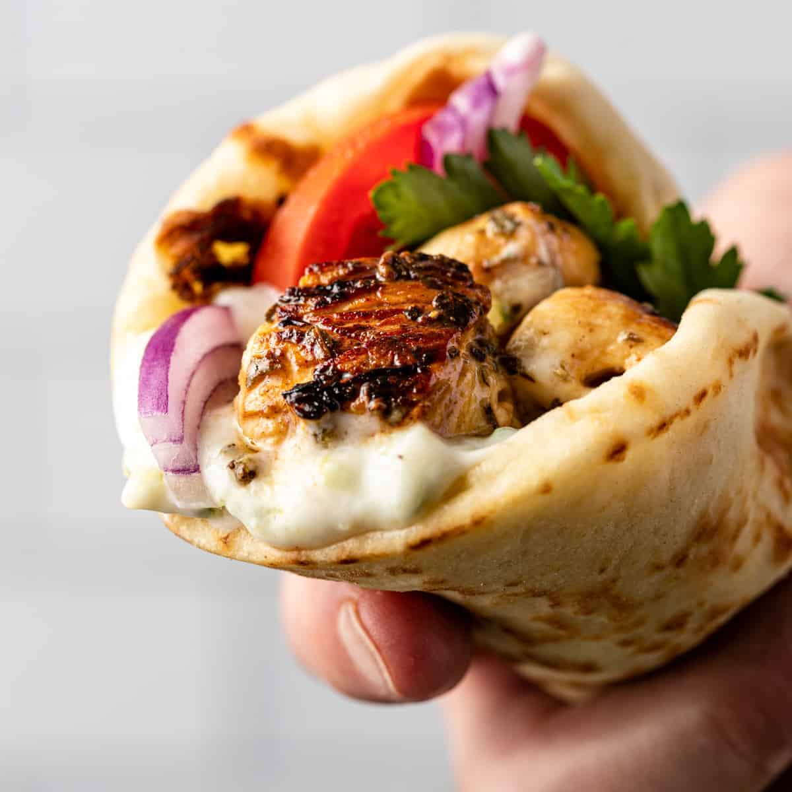

How to make a Greek Souvlaki Sandwich
Back to HomePage

The beauty of souvlaki, Greece's most popular street food,
is its simplicity. Its name is a diminutive of the Greek
word souvla, which means skewer. Essentially,
it's meat on a skewer, grilled over charcoal and served
in various ways, most commonly wrapped in pita bread along
with sliced tomatoes, potatoes, onions and tzatziki.
Ingredients
- Butterflied boneless pork loin chops
- Onions
- Garlic
- Olive oil
- Salt
- Pepper
- Oregano
- Pita Bread
- Tomatoes
- Potatoes
- Tzatziki
Steps:
- In a bowl, mix fresh herb sprigs, onion & garlic slices,
olive oil, vinegar, and a pinch or two of salt and
pepper. Place meat in a large pan and add the marinade.
I like to massage the meat a little with the marinade mixture.
Cover with a towel and let it marinate from 30 minutes to an hour.
- Heat a grill pan or cast iron pan. Add a tablespoon of
olive oil. When oil is very hot grill a few pieces at a
time for 1-2 minutes tops.
- Cut up the tomatoes in slim wedges, thinly slice up
half an onion. Sprinkle a little dry oregano.
Season with a pinch of sea salt, some pepper, a
teaspoon of olive oil, and a dash of white wine vinegar.
Mix together and let it sit for 30 minutes.
- Making tzatziki is super easy. You mix Greek yogurt, grated cucumber, minced garlic, some dill, a splash of white wine vinegar and you are done.
Assembling our Pita
- Place a pita on a piece of parchment paper. Right in the center,
add some meat pieces.
- Add some tomato-onion mix and a couple of tablespoons of tzatziki sauce.
You can also add a couple of French fries if you like.
- Roll up your souvlaki securely with the help of parchment paper.
Fold the end bit so your sauces won’t drip at the end.
- Enjoy!